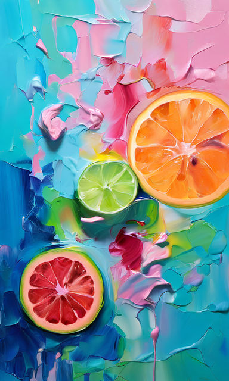

Теория цвета и практики гибкого кода
Анна Ширяева
Теория цвета и практики гибкого кода
Анна Ширяева
Анна Ширяева
- В IT с 2011.
- Frontend разработчик
- Организатор MocsowJS.
- Прошедшая художку любительница
ярких красок.
Поговорим про цвет
- Когда о нем приходится думать?
- Возможности современного CSS.
- Что за цветовые пространства?
- Как они помогают контролировать цвет?
- Теория VS практика.
Итого
- Узнайте дисплеи пользователей.
- Определитесь с цветовым пространством.
- Мешайте цвета с color-mix().
- Пользуйстесь ЧБ режимом для проверки.
